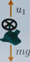

If we lived in a perfect world, a model of the vehicle dynamics would be all we need.
It will tell us how to design vehicle inputs [the motor turn rates] that result in a
desired motion and the vehicle controls problem would be solved. In the real world,
the control problem is all about managing the messiness of the real world,
and making sure the vehicle achieves the task in spite of the sources
that cause the error in achieving the target.
What causes the body to accelerate?
The only thing we directly control are the drone's rotor-rotation rates.
This causes forces and moments on the drone which in turn cause
translational and rotational accelerations.
But for now, let's just focus on accelerations.
So for our purposes, we have direct control over acceleration but not
velocity or position. If we want to change those quantities,
we have to do so through acceleration.
We use the variable U to represent a thrust or torque control input to the drone.

Musings
Discuss why input torque directly affects rotation rates.
Discuss why we mainly focus on torque affecting acceleration.
Difference between integration and differentiation.